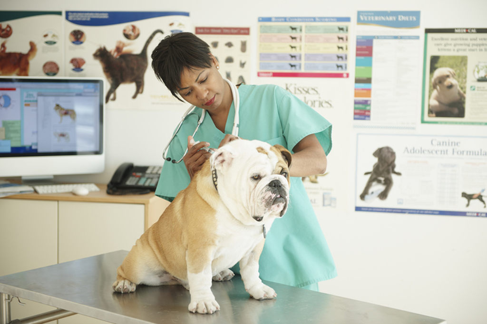

<!DOCTYPE html>
<html lang="pt-pt"></html>
<header>
 <meta charset="utf-8" >
 <meta http-equiv="X-UA-compatible" content="IE=edge">  
 <meta name="viewport" content="width=device-width, initial-scale=1.0">
 <title>sobre nós</title>
 <link rel="stylesheet" href="style/index.html">
 <link rel="stylesheet" href="../stlyle/index.css">
 <style>
     body{
         font: normal Arial,serif;
         text-align: left;
     }
     h1{
         text-align: center;
     }
     p{
         text-align: justify;
     }
     ul{
         align-items: center;
     }
 </style>
 <header>
<body>
    <header id="cabecalho">
        <div id="area-logo">
            

        </div>
        <nav id="menu">
            <ul>
        
            <li><a href="../index.html">home</a></li>
            <li><a href="sobre nós.html">sobre nós</a></li>
            <li><a href="Serviços.html">Serviços </a></li>
            <li><a href="Marcação de consulta.html">marcação de consulta </a></li>
            <li><a href="Exames.html">exames</a></li>
            <li><a href="#">contactos</a></li>>
            <li><a href="/js/cadastro.html">cadastro dos animais</a></li>
        
            </ul>
        </nav>
    </header>
    <div id="banner">
        

    </div>
       <main>

           <div>
           <h1>Bem vindo a Clivet</h1>
           <p>A Clivet possui pontos de atendimento</p>
            <p>Com mais de 30 médicos veterinários, o Hospital Veterinário Vet Quality possui pronto atendimento 24 horas todos os dias</p> 
            <p>ncluindo domingos e feriados, com todo suporte necessário para qualquer tipo de emergência.</p>
            <p> Nossos profissionais que  atuam nas áreas de clínica veterinária e especialidades são formados nas melhores Universidades de Medicina Veterinária</p>
            <P>com especialização, mestrado e doutorado em diversas áreas. Para manter o nível de excelência, incentivamos nossos profissionais para que estejam sempre atualizados</P>
            <p> e aptos a oferecer o melhor atendimento, sempre com muito carinho e paixão pelos animais.</p>
            <p>Fundado em 2017 na rotunda da camama,  a CliVet foi criado com o propósito de unir a paixão pelos animais</p>
            <p>de estimação com a excelência na medicina veterinária, oferecendo um atendimento especializado, humanizado e acolhedor aos nossos clientes e também aos colegas veterinários</p>
            <p>que confiam e encaminham seus pacientes para tratamento no Hospital.</p>
            <p>Com uma postura empreendedora,  inovadora e a constante busca por excelência, passamos a dedicar esforços na ampliação de serviços e áreas de atuação, realizando maiores investimentos</p>
            <p>em conhecimento, tecnologia e desenvolvimento de nossa equipe. de elevado padrão de qualidade, com instalaração que permitem que sejam efetuados todos os processos de prevenção, diagnóstico,</p>
            <p>tratamento e recuperação de nossos pacientes, tornando a Clivet uma  veterinaria  moderna e bem equipadas do país</p>
            <p> longo dos anos sempre nos dedicamos em gerar conhecimento e contribuir para o aperfeiçoamento de nossos profissionais, estimulando a disseminação de conteúdo técnico, atualizações</p>
            <p>e a realização de cursos e especializações. Por esses e muitos outros motivos o Vet Quality vem se destacando, se tornando referência em medicina veterinária de alta complexidade</p>
            <p>e realizando sempre um trabalho de excelência com ética e profissionalismo.</p>
           </div>

           <ul>

            <h1> Horário de atendimento:</h1>
 
 <h2>segundas às sextas-feiras das 7h30min às 17h00min.</h2>
         </ul>
        

       </main>

    
</body>


 </header>
